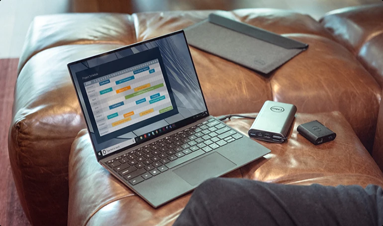

Pendant longtemps, la technologie a demandé notre attention. Nouvelles interfaces, nouveaux menus, nouvelles habitudes. Aujourd'hui, une autre logique apparaît : les meilleurs outils deviennent presque invisibles.
Moins d'interface, davantage d'intention
Une bonne expérience ne consiste plus à afficher le maximum de fonctions. Elle consiste à comprendre ce que la personne essaie réellement de faire, puis à supprimer les étapes inutiles.
“Le progrès le plus intéressant est parfois celui que l'on ne remarque presque plus.”
Cette évolution touche les logiciels de travail, les assistants intelligents, les objets connectés et même les services du quotidien.

Des outils qui s'adaptent au contexte
Le futur proche sera moins défini par une application supplémentaire que par des systèmes capables de comprendre le contexte : où l'on se trouve, ce que l'on fait et quelle information est réellement utile à cet instant.
- Des interfaces plus calmes et plus contextuelles.
- Moins de navigation, davantage d'automatisation.
- Une validation humaine toujours nécessaire.
- La qualité de l'expérience devient un avantage stratégique.
Le design redevient une question de choix
Quand la puissance technique devient accessible à tous, le vrai différenciateur est la capacité à décider ce qui mérite d'être construit — et ce qui peut être supprimé.